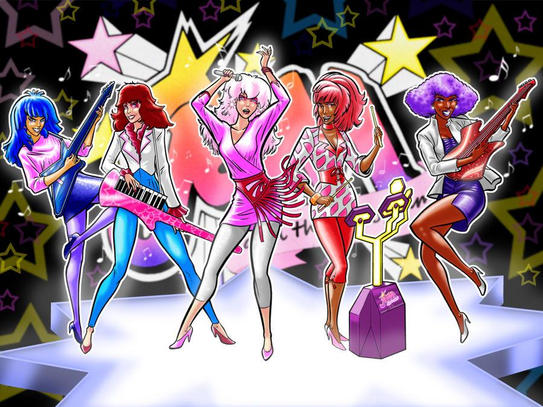

Jem and the Holograms is a fun cartoon about a girl named Jerrica Benton who inherits her father's record label, and his sentient holographic computer named Synergy. Jerrica uses Synergy and a pair of star shaped earrings to turn into her popstart alter-ego Jem. This cartoon aired on October 6th, 1985. Ironically, the 41st anniversary of its' premiere is the due date of this assignment. I remember this cartoon because of Jem's pink hair and her cool outfit transformations.
